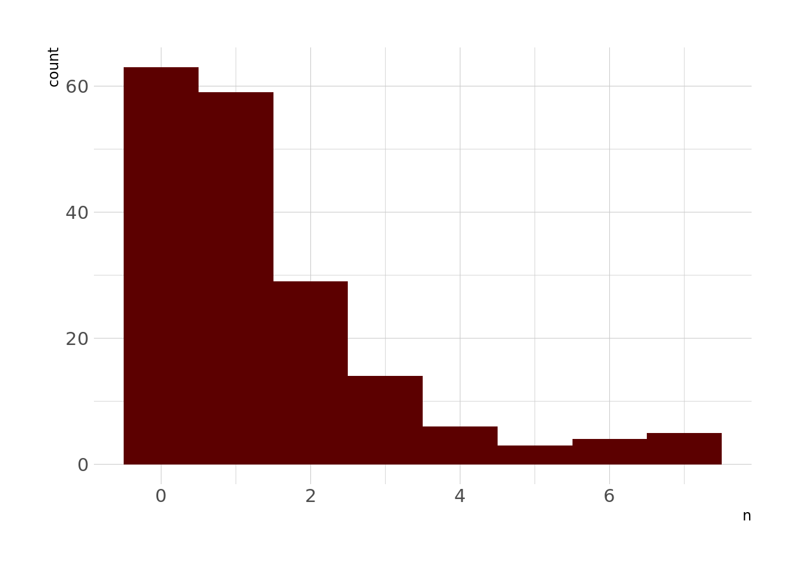

library(tidyverse)
library(tidymodels)
library(hrbrthemes)
library(gameofthrones)
library(vip)
theme_set(theme_ipsum())
lann <- got(1, option = "Lannister")
characters <- readr::read_csv('https://raw.githubusercontent.com/rfordatascience/tidytuesday/master/data/2020/2020-06-30/characters.csv')
locations <- readr::read_csv('https://raw.githubusercontent.com/rfordatascience/tidytuesday/master/data/2020/2020-06-30/locations.csv')
character_visualization <- readr::read_csv('https://raw.githubusercontent.com/rfordatascience/tidytuesday/master/data/2020/2020-06-30/character_visualization.csv')A part of me has always wanted to get into comic books. I think it would be a really good fit for me – I’m definitely a nerd. I play video games, I read fantasy novels, I code/do data science for fun. Comic books should be right up my alley. But for whatever reason, I’ve never taken the plunge. Maybe it’s a time commitment thing. Maybe I know I’ll like them too much. Maybe it’s too daunting to figure out how to start. Regardless, even thought I’m not into comic books, they are intriguing to me, and the X-Men particularly so, which is why I wanted to take a little bit of time to analyze this X-men data promoted by the #tidytuesday project.
The other main purpose of this blog post is to toy around with running a Poisson regression. A few months ago, I saw a post about how the tidymodels framework had some new “parsnip-adjacent” packages, with one being {poissonreg} which fits – you guessed it – Poisson regressions. I haven’t had much reason to use Poisson regression in any of my previous work or in datasets I’ve toyed around with, but this X-men dataset seems like a good excuse to try it out. So, onward and upward!
Setup
First, I’ll load some packages, set some miscellaneous options, and import the data. This data comes from the Claremont Run project, which mines data from Chris Claremont’s run (1975-1991) writing the X-men comics. To learn more about the project, you can visit the website. There are several datasets available, but for this analysis, I’m going to use data from the characters dataset, the character_visualization dataset, and the locations dataset.
Exploring the Data
Let’s first look at the characters dataset. In this dataset, each row corresponds to a character in an issue, and each column corresponds to actions or events relevant to that character. Here’s a glimpse of that data:
characters %>%
glimpse()Rows: 4,209
Columns: 34
$ issue <dbl> 97, 97, 97, 97, 97, 97, …
$ character <chr> "Professor X", "Wolverin…
$ rendered_unconcious <dbl> 0, 0, 0, 1, 0, 0, 0, 0, …
$ captured <dbl> 0, 0, 0, 0, 0, 0, 0, 0, …
$ declared_dead <dbl> 0, 0, 0, 0, 0, 0, 0, 0, …
$ redressed <dbl> 0, 0, 0, 0, 0, 0, 0, 0, …
$ depowered <dbl> 0, 0, 0, 0, 0, 0, 0, 0, …
$ clothing_torn <dbl> 0, 0, 0, 0, 0, 0, 0, 0, …
$ subject_to_torture <dbl> 0, 0, 0, 0, 0, 0, 0, 0, …
$ quits_team <dbl> 0, 0, 0, 0, 0, 0, 0, 0, …
$ surrenders <dbl> 0, 0, 0, 0, 0, 0, 0, 0, …
$ number_of_kills_humans <dbl> 0, 0, 0, 0, 0, 0, 0, 0, …
$ number_of_kills_non_humans <dbl> 0, 0, 0, 0, 0, 0, 0, 0, …
$ initiates_physical_conflict <chr> NA, NA, "1", NA, NA, NA,…
$ expresses_reluctance_to_fight <dbl> NA, NA, 1, NA, NA, NA, N…
$ on_a_date_with_which_character <chr> NA, NA, NA, NA, NA, NA, …
$ kiss_with_which_character <chr> NA, NA, NA, NA, NA, NA, …
$ hand_holding_with_which_character <chr> "Moira MacTaggert", NA, …
$ dancing_with_which_character <chr> NA, NA, NA, NA, NA, NA, …
$ flying_with_another_character <chr> NA, NA, NA, "Storm", "Je…
$ arm_in_arm_with_which_character <chr> NA, NA, NA, NA, NA, NA, …
$ hugging_with_which_character <chr> NA, NA, NA, NA, NA, NA, …
$ physical_contact_other <chr> "Moira MacTaggert", "Sto…
$ carrying_with_which_character <chr> NA, NA, NA, NA, NA, NA, …
$ shared_bed_with_which_character <lgl> NA, NA, NA, NA, NA, NA, …
$ shared_room_domestically_with_which_character <lgl> NA, NA, NA, NA, NA, NA, …
$ explicitly_states_i_love_you_to_whom <chr> NA, NA, NA, NA, NA, NA, …
$ shared_undress <chr> NA, NA, NA, NA, NA, NA, …
$ shower_number_of_panels_shower_lasts <dbl> 0, 0, 0, 0, 0, 0, 0, 0, …
$ bath_number_of_panels_bath_lasts <dbl> 0, 0, 0, 0, 0, 0, 0, 0, …
$ depicted_eating_food <dbl> 1, 0, 0, 0, 0, 0, 0, 0, …
$ visible_tears_number_of_panels <dbl> 0, 0, 0, 0, 0, 0, 0, 0, …
$ visible_tears_number_of_intances <dbl> 0, 0, 0, 0, 0, 0, 0, 0, …
$ special_notes <chr> NA, NA, NA, NA, NA, NA, …So, we can see in this dataset things like who Professor X held hands with in issue 97, how many humans were killed by Magneto in issue 105, etc. We see lots of NAs and 0s in this dataset. The only column I’m going to use from this is the rendered unconscious column, which will be outcome variable in the models later.
In the character_visualization dataset, each row represents a per-issue count of the number of times a character is depicted, speaks, thinks, has a narrative statement (I think this is probably only relevant for the narrator character?), either when the character is in costume or not in costume.
character_visualization %>%
glimpse()Rows: 9,800
Columns: 7
$ issue <dbl> 97, 97, 97, 97, 97, 97, 97, 97, 97, 97, 97, 97, 97, 97, 97, …
$ costume <chr> "Costume", "Costume", "Costume", "Costume", "Costume", "Cost…
$ character <chr> "Editor narration", "Omnipresent narration", "Professor X = …
$ speech <dbl> 0, 0, 0, 7, 24, 0, 11, 9, 10, 0, 0, 0, 0, 0, 0, 0, 0, 0, 0, …
$ thought <dbl> 0, 0, 0, 0, 3, 0, 0, 0, 0, 0, 0, 0, 0, 0, 0, 0, 0, 0, 0, 0, …
$ narrative <dbl> 0, 0, 0, 0, 0, 0, 0, 0, 0, 0, 0, 0, 0, 0, 0, 0, 0, 0, 0, 0, …
$ depicted <dbl> 0, 0, 0, 10, 23, 0, 9, 17, 17, 5, 0, 0, 0, 0, 0, 0, 0, 0, 0,…In the location dataset, each row corresponds to a location in which part of the issue takes place, with as many locations listed per issue as appear in that issue. The dataset also includes a “context” column that describes things like whether the location is shown in the present, as part of a flashback, in a dream, etc. Here’s a glimpse:
locations %>%
glimpse()Rows: 1,413
Columns: 4
$ issue <dbl> 97, 97, 97, 97, 97, 98, 98, 98, 98, 98, 99, 99, 99, 99, 99, 9…
$ location <chr> "Space", "X-Mansion", "Rio Diablo Research Facility", "Kenned…
$ context <chr> "Dream", "Present", "Present", "Present", "Present", "Present…
$ notes <chr> NA, NA, NA, NA, NA, NA, NA, NA, NA, NA, NA, "Cuts back and fo…Across these datasets, it probably makes the most sense to aggegrate data up to the issue level, since that’s kind of the lowest common denominator here. So, essentially the question I’m going to try to answer in this blog post is:
What features of an X-men issue predict how many characters are rendered unconscious in that issue?
First, let’s look at the distribution of rendered unconscious:
characters %>%
count(issue, wt = rendered_unconcious, sort = TRUE) %>%
ggplot(aes(x = n)) +
geom_histogram(fill = lann, bins = 8)
Right, so, this is a pretty strongly right-skewed distribution, which is sort of what we’d expect from a Poisson distribution, especially one with a low expected number of events (which I’d imagine is the case in comic books).
Cleaning, Aggregating, and Joining
Next, let’s aggregate our data up to the issue level. This will give us data where a row represents an issue rather than a character within an issue or a location within an issue. We’ll start with the characters dataset. There’s a lot we could do with this data, but because there are only 183 issues represented in this dataset, we need to be cognizant about how many predictors we’re including. So the only variable I’m going to use here is rendered unconscious as the outcome, which will represent the number of characters rendered unconscious in a given issue.
rend_df <- characters %>%
group_by(issue) %>%
summarize(rendered_unconscious = sum(rendered_unconcious, na.rm = FALSE))Next, let’s work on the character_visualization dataset. Again, trying to keep the number of predictors relatively small, I’m going to winnow this down to represent counts of how many times a handful of key characters are depicted in each issue. I don’t know a ton about the X-men, but I know who some of the more important characters are, so I’m going to choose Wolverine, Professor X, Magneto, and Jean Grey here.
char_sum <- character_visualization %>%
filter(str_detect(character, "Wolverine|Xavier|Jean Grey|Magneto")) %>%
group_by(issue, character) %>%
summarize(depict = sum(depicted, na.rm = FALSE)) %>%
mutate(character = case_when(
str_detect(character, "Jean Grey") ~ "Jean_Grey",
str_detect(character, "Wolv") ~ "Wolverine",
str_detect(character, "Magneto") ~ "Magneto",
str_detect(character, "Xavier") ~ "Professor_X"
)) %>%
pivot_wider(
names_from = character,
values_from = depict
)Next, let’s work on our locations dataset. First, let’s look at the most common locations. Again, since we only have 183 rows in our dataset that we’re modeling with, I only want to choose a handful of variables to include in the model here.
locations %>%
count(location, sort = TRUE)# A tibble: 785 × 2
location n
<chr> <int>
1 X-Mansion 100
2 Danger Room 27
3 Space 19
4 Muir Island, Scotland 14
5 Unspecified region in Australia 14
6 Eagle Plaza, Dallas Texas 11
7 Central Park 10
8 Morlock residence under New York 10
9 Princess Lilandra's Home Planet 10
10 San Francisco 10
# … with 775 more rowsOk, so, I’m just going to go with the 3 most common locations: the X-mansion, the Danger Room (whatever that is), and Space. Danger Room sounds to me like a place where people might be rendered unconscious.
use_locs <- locations %>%
count(location, sort = TRUE) %>%
top_n(3) %>%
pull(location)
locs_sum <- locations %>%
group_by(issue) %>%
summarize(mansion = use_locs[[1]] %in% location,
danger_room = use_locs[[2]] %in% location,
space = use_locs[[3]] %in% location) %>%
mutate(across(where(is_logical), as.numeric))This will return a dataset that tells us whether a given issue has the X-mansion, the Danger Room, or Space as a location.
locs_sum %>%
glimpse()Rows: 183
Columns: 4
$ issue <dbl> 97, 98, 99, 100, 101, 102, 103, 104, 105, 106, 107, 108, 1…
$ mansion <dbl> 1, 1, 1, 0, 0, 0, 0, 0, 0, 1, 0, 0, 1, 1, 1, 1, 0, 1, 1, 0…
$ danger_room <dbl> 0, 0, 0, 0, 0, 0, 0, 0, 0, 1, 0, 0, 0, 1, 0, 0, 0, 0, 0, 0…
$ space <dbl> 1, 0, 0, 0, 0, 0, 0, 1, 1, 0, 1, 0, 0, 0, 0, 0, 0, 0, 0, 0…Now we can join the three datasets into one useful for modeling. I’m using an inner join here because, for whatever reason, the character visualization dataset has more issues represented than the others, and we only want issues that are represented in all 3 dataframes.
issues_joined <- reduce(list(rend_df, char_sum, locs_sum), ~inner_join(.x, .y, by = "issue"))Modeling
Cool, so now we’re done preprocessing our data – now we can specify our model.
I mentioned before that one issue here is that this is a small set of data. We have 183 observations (again, each observation is an issue), which isn’t many. One way to make our modeling more robust is to use bootstrap resampling (see our good friend Wikipedia for an explanation) and to fit models to several resamples.
set.seed(0408)
booties <- bootstraps(issues_joined, times = 100)
head(booties$splits, n = 5)[[1]]
<Analysis/Assess/Total>
<183/68/183>
[[2]]
<Analysis/Assess/Total>
<183/66/183>
[[3]]
<Analysis/Assess/Total>
<183/66/183>
[[4]]
<Analysis/Assess/Total>
<183/70/183>
[[5]]
<Analysis/Assess/Total>
<183/64/183>What we can see here is that every bootstrap sample has 183 rows in the analysis set, which is what the model will be trained on, and then some other number of rows in the assessment set. This other number is the out-of-bag sample – the rows that weren’t randomly sampled by the bootstrap process.
Next, I’m going to set up a workflow. I think of this as like a little suitcase that can carry things I want to use in my model around – I think that analogy might be from Julia Silge? Anyway, I’m going to start by adding the formula I want to use in my model.
xmen_wf <- workflow() %>%
add_formula(rendered_unconscious ~ Magneto + Jean_Grey + Wolverine + Professor_X + mansion + danger_room + space)Now we can further specify the model. Remember that since our outcome is a count, we’ll be fitting a Poisson regression. Looking at the outcome distribution earlier, I don’t think I need to use a zero-inflated model here (although maybe? Again, this isn’t really my expertise), so I’m just going to proceed with a regular Poisson regression, fit using the {glmnet} engine. I’m also going to tune the penalty and mixture arguments, which control the amount of total regularization applied to the model as well as the proportion of the penalty that is L1 (lasso) vs L2 (ridge regression).
Brief Interpolation on what a Poisson regression is A Poisson regression is a generalized linear model (GLM) used to model count data. Like the name implies, GLMs are generalizations of linear models that use a link function, g(), to transform the expected value of the response (outcome) to a linear function of the predictor variables. Poisson regression uses a log link function to accomplish this transformation. For people interested in reading more, I really like John Fox’s book, Applied Regression Analysis.
library(poissonreg)
poisson_mod <- poisson_reg(
penalty = tune(),
mixture = tune()
) %>%
set_engine("glmnet")Since I’m tuning a couple of parameters, I need to make a grid with possible values to tune across
poisson_tune <- grid_max_entropy(
penalty(),
mixture(),
size = 10
)And I’ll drop the model spec into the previous workflow.
xmen_wf <- xmen_wf %>%
add_model(poisson_mod)
xmen_wf══ Workflow ════════════════════════════════════════════════════════════════════
Preprocessor: Formula
Model: poisson_reg()
── Preprocessor ────────────────────────────────────────────────────────────────
rendered_unconscious ~ Magneto + Jean_Grey + Wolverine + Professor_X +
mansion + danger_room + space
── Model ───────────────────────────────────────────────────────────────────────
Poisson Regression Model Specification (regression)
Main Arguments:
penalty = tune()
mixture = tune()
Computational engine: glmnet And now we can fit the model using our bootstrap resamples.
xmen_fit <- tune_grid(
xmen_wf,
resamples = booties,
grid = poisson_tune
)Our models have fit, so now we can look at our results:
xmen_fit %>%
collect_metrics()# A tibble: 20 × 8
penalty mixture .metric .estimator mean n std_err .config
<dbl> <dbl> <chr> <chr> <dbl> <int> <dbl> <chr>
1 8.81e- 4 0.0155 rmse standard 1.93 100 0.0894 Preprocessor1_Model…
2 8.81e- 4 0.0155 rsq standard 0.0277 100 0.00398 Preprocessor1_Model…
3 4.67e- 7 0.0676 rmse standard 1.93 100 0.0896 Preprocessor1_Model…
4 4.67e- 7 0.0676 rsq standard 0.0277 100 0.00398 Preprocessor1_Model…
5 5.56e- 1 0.148 rmse standard 1.71 100 0.0201 Preprocessor1_Model…
6 5.56e- 1 0.148 rsq standard 0.0288 100 0.00426 Preprocessor1_Model…
7 4.76e-10 0.190 rmse standard 1.93 100 0.0895 Preprocessor1_Model…
8 4.76e-10 0.190 rsq standard 0.0277 100 0.00398 Preprocessor1_Model…
9 1.09e- 2 0.500 rmse standard 1.92 100 0.0841 Preprocessor1_Model…
10 1.09e- 2 0.500 rsq standard 0.0278 100 0.00403 Preprocessor1_Model…
11 2.44e- 7 0.517 rmse standard 1.94 100 0.0896 Preprocessor1_Model…
12 2.44e- 7 0.517 rsq standard 0.0277 100 0.00398 Preprocessor1_Model…
13 1.73e-10 0.622 rmse standard 1.94 100 0.0896 Preprocessor1_Model…
14 1.73e-10 0.622 rsq standard 0.0277 100 0.00398 Preprocessor1_Model…
15 1.10e- 5 0.881 rmse standard 1.94 100 0.0897 Preprocessor1_Model…
16 1.10e- 5 0.881 rsq standard 0.0277 100 0.00398 Preprocessor1_Model…
17 1.99e- 1 0.942 rmse standard 1.69 100 0.0190 Preprocessor1_Model…
18 1.99e- 1 0.942 rsq standard 0.0302 100 0.00404 Preprocessor1_Model…
19 5.97e-10 0.985 rmse standard 1.94 100 0.0897 Preprocessor1_Model…
20 5.97e-10 0.985 rsq standard 0.0277 100 0.00398 Preprocessor1_Model…Ok, so, my limited understanding of Poisson regression is that neither RMSE or R-squared values are ideal metrics, and some googling led me to find that there’s an open issue to add a Poisson log loss metric to the yardstick package, so we’ll gloss over these for now.
Anyway, let’s pick the best model here, finalize the model, and then fit it to our full training data.
best_params <- xmen_fit %>%
select_best(metric = "rmse")
final_mod <- xmen_wf %>%
finalize_workflow(best_params) %>%
fit(data = issues_joined)And let’s check out how important how variables are. This should give us the coefficients from our model.
final_mod %>%
pull_workflow_fit() %>%
vi()# A tibble: 7 × 3
Variable Importance Sign
<chr> <dbl> <chr>
1 mansion 0.157 NEG
2 danger_room 0.113 NEG
3 Professor_X 0.0197 POS
4 Jean_Grey 0.0133 POS
5 Wolverine 0.00938 POS
6 Magneto 0.00701 POS
7 space 0 NEG final_mod %>%
pull_workflow_fit() %>%
vip(num_features = 7, fill = lann)Right, so, one thing to keep in mind here is that the location variables and the character variables are on different scales, so the effects aren’t directly comparable. But the interpretation here is that more appearances of Professor X are more strongly associated with more characters rendered unconscious in an issue than are more appearances of Magneto, although all of these coefficients are positive, suggesting that more appearances of any of these four characters are associated with more renderings unconscious in that issue. Similarly, the effects of danger_room and mansion are negative, suggesting that if the issue features either of those locations, there tend to be fewer characters rendered unconscious. The coefficient for space is 0, which probably means it got regularized out. Probably the most important piece, here, though, is that these effects seem to be very small, which means they likely don’t actually matter.
I’m going to call it right here. Even though the model I built doesn’t seem to have much explanatory power, it forced me to read some more about Poisson regression and to dig back into the tidymodels framework, which I’ll count as a win. Plus it gives me an excuse to gather “domain knowledge” about comic books so I can do a better job next time.
Reuse
Citation
BibTeX citation:
@online{ekholm2020,
author = {Eric Ekholm},
title = {Unconsciousness in the {Xmen}},
date = {2020-05-06},
url = {https://www.ericekholm.com/posts/unconsciousness-in-the-xmen},
langid = {en}
}
For attribution, please cite this work as:
Eric Ekholm. 2020. “Unconsciousness in the Xmen.” May 6,
2020. https://www.ericekholm.com/posts/unconsciousness-in-the-xmen.